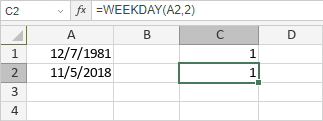

WEEKDAY funkcija
Funkcija WEEKDAY je jedna od funkcija za datum i vreme. Koristi se da odredi koji je dan u nedelji za dati datum.
Sintaksa
WEEKDAY(serial_number, [return_type])
Funkcija WEEKDAY ima sledeće argumente:
| Argument | Opis |
|---|---|
| serial_number | Broj koji predstavlja datum dana koji pokušavate da odredite, unet pomoću DATE funkcije ili druge funkcije za datum i vreme. |
| return_type | Broj koji određuje tip vrednosti koja će biti vraćena. Moguće vrednosti su navedene u tabeli ispod. |
Argument return_type može biti jedna od sledećih vrednosti:
| Numerička vrednost | Objašnjenje |
|---|---|
| 1 ili izostavljeno | Vraća broj od 1 (nedelja) do 7 (subota) |
| 2 | Vraća broj od 1 (ponedeljak) do 7 (nedelja). |
| 3 | Vraća broj od 0 (ponedeljak) do 6 (nedelja). |
Napomene
Kako primeniti funkciju WEEKDAY.
Primeri
Slika ispod prikazuje rezultat koji vraća funkcija WEEKDAY.
